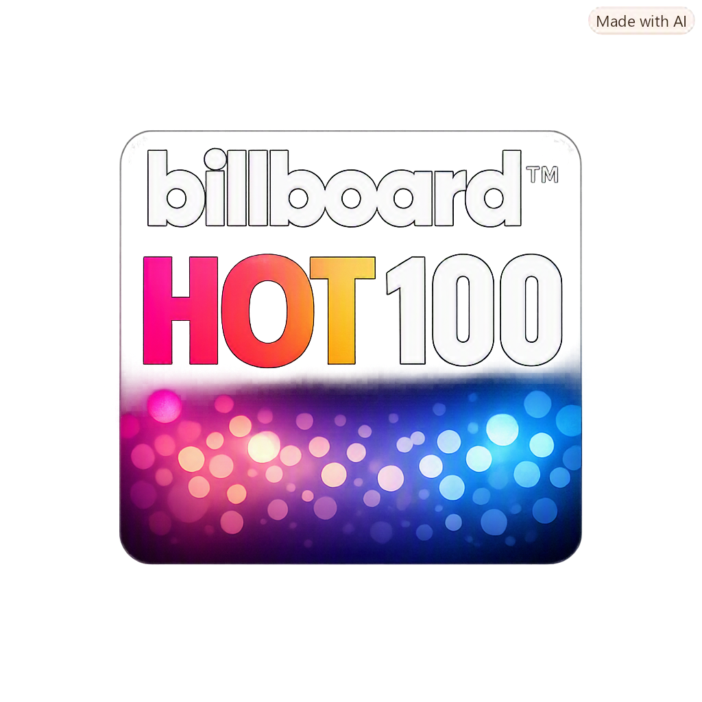

Meu primeiro post.
Por: Victor
Boas-vindas ao meu novo blog! Aqui vou compartilhar informações sobre a billboard.
Vou compartilhar informações sobre a Billboard.

Meu primeiro post.
Por: Victor
Boas-vindas ao meu novo blog! Aqui vou compartilhar informações sobre a billboard.

Billboard Hot 100™
Por: victor
Nessa postagem é sobre TOP 5 nos charts atuais:

Recordes Históricos da Billboard (All-Time Records)
Por: Victor
Fãs de música são conhecidos por discutir estatísticas e recordes. 8Alguns exemplos incluem "Old Town Road" de Lil Nas X, que ficou 19 semanas em #1, e os Beatles, que lideram o ranking de artistas com mais canções em #1. Mariah Carey e Drake também estão entre os principais recordistas. E, claro, Taylor Swift estabeleceu um recorde impressionante ao ocupar todo o Top 14 da Billboard Hot 100 de uma só vez.

Billboard Music Awards (BBMA) e Eventos
Por: Victor
O Billboard é mais do que uma simples parada de sucessos, é um dos principais eventos de premiação musical do mundo. Os prêmios são concedidos com base no desempenho real nos charts, incluindo vendas, streaming e rádio, o que o difere do Grammy,que é escolhido por votação. O Billboard também promove o evento anual Women in Music, que homenageia as mulheres mais influentes da indústria.

Os "Álbuns que Recusaram Morrer" (Catalog Charts)
Por: Victor
A indústria musical não vive apenas de lançamentos. Músicas e álbuns antigos podem ganhar nova vida e voltar a fazer muito sucesso.
A parada "Catalog Albums" é um exemplo disso, destacando projetos que continuam vendendo bem mesmo após mais de 18 meses de lançamento.
Álbuns de artistas como Michael Jackson, Fleetwood Mac e Lana Del Rey são exemplos disso. Além disso,
o impacto do streaming e do cinema também pode fazer com que músicas antigas voltem para os charts atuais,
como aconteceu com a música de Kate Bush em "Stranger Things".

Novos Artistas 2026:
Por: Victor
ADÉLA é a nova sensação do pop alternativo do ano. Suas músicas "KGB" e "Ain't in LA" alcançaram um feito histórico, escalando rapidamente os charts de streaming e rádio. Ela é o exemplo perfeito de como o engajamento orgânico pode superar as expectativas. Alex Warren é o cantor e compositor que arrasou nos charts com "Ordinary", alcançando mais de 1 bilhão de streams e se tornando um forte favorito para o Grammy de Best New Artist. Olivia Dean é a britânica que entrou com tudo na Hot 100 e se tornou uma das favoritas das paradas de rádio e streaming. KATSEYE é o grupo global que fez sua estreia bombástica na Billboard, provando o poder das novas dinâmicas de fandom.